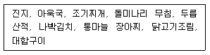

조리기능장 (2002-07-21 기출문제)
1과목: 임의 구분
1. 세계 보건기구(WHO)에서 한 나라의 보건수준을 표시하여 다른 나라와 비교하는데 사용하는 지표는?
- 비례사망지수, 유병율, 모성사망율
- 조출생율, 유병율, 신생아사망율
- 조출생율, 평균수명, 조사망율
- 평균수명, 조사망율, 비례사망지수
(정답률: 40%)

2. 식기를 끓는 물에 소독할 때 최소한 끓이는 시간으로 가장 적당한 것은?
- 30초
- 30분
- 3시간
- 30시간
(정답률: 53%)
3. 아포를 가진 병원균의 소독법은 어느 것인가?
- 5% 크레졸액
- 일광 소독법
- 자비법
- 간헐 멸균법
(정답률: 55%)
4. 수중에 배출된 병원성 미생물은 시간이 경과됨에 따라 어떻게 되는가?
- 현상 유지한다.
- 급속히 증가한다.
- 완만히 증식한다.
- 생존하나 서서히 감소한다.
(정답률: 34%)
5. 잠복기 보균자를 가장 잘 설명한 것은?
- 전염성 질환의 잠복기간 중 병원체를 배출하는 감염자
- 감염에 의한 임상증상이 전혀 없으면서 병원체를 보유하는 감염자
- 전염성 질환의 증상이 완전히 소실되었는데도 병원체를 배출하는 보균자
- 병원체가 지속적으로 배출되는 보균자
(정답률: 19%)
6. 중간 숙주가 필요없이 인체에 감염을 일으키는 기생충은?
- 무구조충
- 간흡충
- 선모충
- 십이지장충
(정답률: 48%)
7. 보건의료자원에 해당되지 않는 것은?
- 보건의료인력
- 보건의료행태
- 보건의료시설
- 보건의료기술 및 지식
(정답률: 40%)
8. 인구집단의 질병상태를 사람, 시간, 장소의 측면에서 관찰하는 1단계 역학은?
- 분석역학
- 실험역학
- 기술역학
- 이론역학
(정답률: 17%)
9. 모체로부터 태반이나 수유를 통해 받는 면역은?
- 자연능동면역
- 인공능동면역
- 자연수동면역
- 인공수동면역
(정답률: 22%)
10. 장티푸스에 대한 설명으로 옳지 않은 것은?
- 제 1군 법정전염병이다.
- 식품위생의 관리가 중요하다.
- 인축공통전염병이다.
- 환자와 보균자가 병원소이다.
(정답률: 40%)
11. 연어나 송어를 생식할 때 걸리기 쉬운 기생충 질환은?
- 이질아메바증
- 말레이사상충증
- 광절열두조충증
- 갈고리촌충증
(정답률: 64%)
12. 고온환경에서 지나친 발한으로 인한 수분과 염분 손실이 원인이 되는 열중증은?
- 열쇠약증
- 울열증
- 열사병
- 열경련
(정답률: 10%)
13. 식품위생의 목적이 아닌 것은?
- 위생상의 위해방지
- 식품영양의 질적 향상 도모
- 국민보건의 향상과 증진
- 조리방법 및 식품첨가물 개발
(정답률: 75%)
14. 집단 식중독이 발생하였을 때의 처치사항을 설명한 것중 틀린 것은?
- 환자의 가검물을 원인조사시까지 보관한다.
- 즉시 항생물질을 복용시킨다.
- 관계기관에 즉시 신고한다.
- 원인식을 조사한다.
(정답률: 63%)
15. 변질에 대한 설명으로 가장 옳은 것은?
- 미생물 번식에 의해 식품성분이 변화되는 것
- 식품의 모양이 변하는 것
- 미생물의 작용으로 항생물질 등의 유용물질이 생성 되는 것
- 식품이 변하여 이산화탄소와 에탄올을 생성시키는 것
(정답률: 36%)
16. 유지식품이 산패되면 어떤 물질이 생성되는가?
- 글리코겐
- 아민
- 암모니아
- 과산화물
(정답률: 34%)
17. 다음 중 대장균군에 속하지 않는 세균은?
- 바실루스(Bacillus)
- 에스체리치아(Escherichia)
- 클렙실라(Klebsiella)
- 사이트로박터(Citrobacter)
(정답률: 28%)
18. 화농성 상처가 있는 사람이 조리한 음식으로부터 발생 가능성이 가장 큰 식중독 원인균은?
- 살모넬라균
- 포도상구균
- 병원성대장균
- 장염 비브리오균
(정답률: 59%)
19. 정제가 불량한 면실유(cotton seed oil)로 조리한 식품으로 인한 식중독 발생시 원인물질은?
- 솔라닌(solanine)
- 고시폴(gossypol)
- 루틴(rutin)
- 무스카린(muscarine)
(정답률: 40%)
20. 항생물질에 오염된 식품의 섭취시 발생하는 가장 큰 문제점은?
- 만성독성
- 알레르기(allergy) 발현
- 내성균 출현
- 급성독성
(정답률: 25%)
2과목: 임의 구분
21. 화학적 식중독의 일반적인 증상과 가장 거리가 먼 것은?
- 구토
- 발열
- 두통
- 복통
(정답률: 59%)
22. 식품 첨가물 중 관능을 만족시키는 첨가물이 아닌 것은?
- 조미료
- 보존료
- 산미료
- 발색제
(정답률: 36%)
23. 식품의 관능검사에 속하지 않는 것은?
- 색깔
- 냄새
- 맛
- 비중
(정답률: 64%)
24. 일반적으로 건미역을 물에 충분히 불렸을 때 무게는 약 몇 배가 되는가?
- 1-1.5배
- 2-4배
- 7-9배
- 12-15배
(정답률: 43%)
25. 조리과정 중에 유출되는 수용성 영양소를 모두 흡수할 수 있는 조리법에 적용되는 것이 아닌 것은?
- 미역국
- 버섯전골
- 대구매운탕
- 삶은 감자
(정답률: 60%)
26. 오븐에서 음식을 굽기와 관련된 설명이 맞는 것은?
- 광택이 있는 용기는 복사열을 쉽게 통과시킨다.
- 금속제 용기는 전자파를 쉽게 통과시킨다.
- 복사열에 고루 노출되어야 음식이 고루 익는다.
- 한 개 이상의 용기를 넣을 때는 용기가 그물 선반의 중앙에 모두 위치하게 대류가 발생되지 않게 한다.
(정답률: 70%)
27. 다음은 5첩 반상의 예를 든 것이다. 어느 계절에 적절 한 차림인가?

- 봄
- 여름
- 가을
- 겨울
(정답률: 60%)
28. 쌀밥을 실온에 방치할 때 일어나는 현상은?
- α 전분이 β 전분으로 되어 소화율이 저하된다.
- α 전분이 β 전분으로 되어 소화율이 증가한다.
- β 전분이 α 전분으로 되어 소화율이 저하된다.
- β 전분이 α 전분으로 되어 소화율이 증가한다.
(정답률: 39%)
29. 소스나 크림 등을 만들 때 녹말가루나 밀가루 등을 넣을 경우 덩어리가 생기지 않도록 하기 위해 전분입자를 분리 시키는 역할을 하는 것으로 부적당한 것은?
- 냉수
- 설탕
- 소금
- 버터
(정답률: 20%)
30. 생선, 돼지고기 또는 닭고기 등을 조리하면서 생강을 넣는 경우에 탈취 효과를 높이기 위해 생강을 넣는 시기와 원리를 가장 잘 짝지은 것은?
- 처음부터 - 탄수화물의 열변성
- 끓은 후 - 단백질의 열변성
- 완성되기 직전 - 지방질의 열변성
- 완성된 후 - 진저론의 열변성
(정답률: 알수없음)
31. 다음 중 옳게 설명된 것은?
- 시금치에는 수산이 함유되어 있어 칼슘의 흡수를 돕는다.
- 콩을 삶을 때 중조를 넣으면 빨리 삶아지나 비타민 B1의 손실이 크다.
- 저온의 물에서 오래 삶는 것이 영양소 손실이 적다.
- 완두콩을 푸르게 하려면 식초를 넣고 삶으면 된다.
(정답률: 58%)
32. 채소, 불린 쌀, 잣, 깨 등을 곱게 갈기 위해 사용되는 기기는?
- 블랜더(Blender)
- 슬라이서(Slicer)
- 컷터(Cutter)
- 쵸퍼(Chopper)
(정답률: 36%)
33. 조리장의 시설· 설비를 계획할 때 유의해야 할 계획요소가 아닌 것은?
- 미관
- 경제성
- 위생
- 위치
(정답률: 39%)
34. 원가계산에 대한 설명 중 옳은 것은?
- 원가계산의 목적은 원가관리의 목적과 유통구조의 개선에 있다.
- 원가계산의 일반과정은 요소별 → 제품별 → 부문별 원가계산을 거친다.
- 일반적인 원가계산의 기간은 보통 6개월 단위로 한다.
- 원가계산상 보험료, 조명비, 감가상각비는 고정비에 해당한다.
(정답률: 13%)
35. 2㎏의 생선을 손질하여 1.2㎏의 생선회를 5인분 만들었다. 1인분의 판매가격을 35,000원으로 정했을 경우 판매 된 생선회의 식재료 원가비는 몇 %인가? (생선 1㎏당 20,000원에 구입하였고 기타 양념 및 부재료는 원재료비의 5%를 적용한다.)
- 13.7%
- 14.4%
- 22.9%
- 24.0%
(정답률: 19%)
36. 제품을 제조하기 위하여 소비되는 물품의 원가는?
- 노무비
- 재료비
- 경비
- 전력비
(정답률: 55%)
37. 생식품 조리시의 주의점으로 맞지 않는 것은?
- 어육에는 거의 유해균이 없으므로 생선회를 할 경우 신선한 재료를 취해 외부를 깨끗이 씻어주면 비교적 안전하다.
- 어류는 껍질을 벗긴 후 물에 담그면 육색이 변하므로 껍질을 벗긴 후에는 물에 씻지 않도록 한다.
- 어육은 식초에 의해 변색되어 표면이 응고되어 살이 단단해진다.
- 쇠고기에는 갈고리촌충(유구조충)이 민물고기에는 간디스토마, 가재에는 폐디스토마의 위험이 있으므로 생식은 금하는 것이 좋다.
(정답률: 46%)
38. 튀김에 대한 설명으로 올바르지 않은 것은?
- 튀김은 가열 도중 조미가 되지 않는 조리법이다.
- 물보다 높은 온도를 이용할 수 있다.
- 조리시간을 단축할 수 있으나 영양소와 비타민의 파괴가 많다.
- 수분이 많고 표면적이 큰 식품은 튀기기전 어느 정도 수분을 제거하는 것이 좋다.
(정답률: 60%)
39. 가열조리가 식품에 미치는 영향으로 맞는 것은?
- 무기질의 함량은 가열조리시 일반적으로 안정되어 손실이 없다.
- 가열에 의해 달걀의 흰자 아비딘(avidin)은 파괴되어 비오틴(biotin)과 결합하지 못하게 되는데 이 때문에 달걀흰자는 가열조리에 의해 더 영양적으로 된다.
- 채소의 조직은 가열에 의해 부드럽게 되며, 단백질 식품도 역시 부드럽게 변한다.
- 튀김을 할 때에는 기름의 온도를 높게 할수록 좋다.
(정답률: 34%)
40. 일본음식에 대한 식탁예법으로 올바르지 않은 것은?
- 밥그릇과 국그릇은 반드시 손에 들고 먹는다.
- 생선 한쪽 면의 살코기를 다 먹으면 뒤집어 밑부분의 살코기를 위로 오게 한 후 먹는다
- 생선구이를 먹을 때에는 오른쪽 꼬리부분부터 한입씩 젓가락으로 먹는다.
- 나무젓가락은 끝이 붙은 경우에는 조용히 쪼개어 사용하며 매끈하게 하기 위해 두개의 나무젓가락을 서로 비비지 않는다.
(정답률: 20%)
3과목: 임의 구분
41. 밀가루 반죽의 성질에 영향을 주는 요인이 아닌 것은?
- 밀가루의 종류
- 밀가루의 색깔
- 반죽을 치대는 정도
- 첨가물(소금, 설탕, 유지, 달걀, 이스트)의 양
(정답률: 60%)
42. 두류의 조리 중 변화로 틀린 것은?
- 물이 온도가 높을수록 두류에 물이 흡수되는 속도는 느리다.
- 가열처리로 트립신 저해물질 등의 독성이 파괴되고 단백질 이용률이 증가된다.
- 가열에 의해 소화성이 높아진다.
- 콩을 삶을 때는 뚜껑을 닫는 것이 콩비린내의 생성을 방지할 수 있다.
(정답률: 17%)
43. 난백의 기포성에 영향을 미치는 요인이 아닌 것은?
- 달걀의 신선도
- pH
- 온도
- 색
(정답률: 40%)
44. 우유단백질인 락토알부민(lactoalbumin)과 락토글로불린(lactoglobulin)이 가열조리에 의해 응고하기 시작하는 온도는?
- 60℃이상
- 75℃이상
- 50℃이상
- 90℃이상
(정답률: 19%)
45. 조리에 의한 채소의 변화가 아닌 것은?
- 비타민 합성
- 휘발성산의 휘발
- 비타민과 무기질 등의 손실
- 엽록소의 파괴
(정답률: 19%)
46. 레토르트(retort)식품에 대한 설명으로 옳지 않은 것은?
- 종래의 통조림, 병조림과는 포장 용기만이 다를 뿐 같은 제품이라 생각해도 무방하다.
- 통조림, 병조림 식품과 비교해 단시간의 가열로도 목적하는 살균이 가능하다.
- 용기의 형태, 크기 등의 다양한 개발이 가능하다.
- 내용물의 영양소 파괴나 품질의 열화가 크다.
(정답률: 47%)
47. 식단 작성시 반드시 고려해야 할 점이 아닌 것은?
- 가장 우선적으로 기호성을 고려해 다양한 식단을 작성한다.
- 모든 영양소가 골고루 함유되도록 작성한다.
- 매일의 식사에 다양한 식품이 고루 포함되고 편식되지 않도록 계획한다.
- 식품 선택에 있어 가격과 영양가를 비교하면서 식생활비를 조절할 수 있도록 작성한다.
(정답률: 42%)
48. 선입선출법에 대한 설명으로 올바르지 않은 것은?
- 먼저 입고되었던 순서에 따라 출고하는 방법이다.
- 구매과정에서부터 출고되기 전까지의 생산날짜, 구입일이 빠른 식재료를 선발하여 출고하는 방법이다.
- 대부분의 식재료 출고방법은 아니나 사용방법과 업장의 특별행사로 인해 진행될 수 있는 출고방법이다.
- 식재료 부패, 유통기한 초과를 방지할 수 있다.
(정답률: 46%)
49. 효율적인 조리작업장 설비 계획시 고려할 점이 아닌 것은?
- 조리장비 및 설비의 다양성
- 물품의 출입이 자유로울 것
- 조리작업이 편리하고 안전할 것
- 식당과의 연결이 용이할 것
(정답률: 40%)
50. 조리작업장의 위생관리로 올바르지 않은 것은?
- 석쇠판 등의 브로일러(broiler)는 해충 방지를 위해 카바메이트계 등의 유제를 분무, 도포한다.
- 도마와 식칼은 80綽의 뜨거운 물에 5분간 담군 후 세척한다.
- 행주는 물에 담가 1차 세척 후 식품용 세제로 씻어 깨끗한 물로 헹구고 100綽에서 5분 이상 자비소독한다.
- 위생관리 스케줄을 이용하여 정기적으로 확인한다.
(정답률: 36%)
51. 표준조리레시피의 구성요소가 아닌 것은?
- 평가점수
- 메뉴명
- 1인분 생산량
- 메뉴단가
(정답률: 34%)
52. 단백질의 함량이 가장 높은 것은?
- 치즈
- 연유
- 발효유
- 버터
(정답률: 67%)
53. 다음 중 염분을 제한해야 할 고혈압 환자에게 알맞은 식품은?
- 오이
- 김
- 버터
- 새우 말린 것
(정답률: 30%)
54. 탄수화물의 체내기능 중 가장 중요한 것은?
- 골격형성
- 근육형성
- 열량발생
- 생리기능조절
(정답률: 50%)
55. 호화의 물리적 성질이 아닌 것은?
- 부피의 감소
- 용해성의 증가
- 점도의 증가
- 방향부동성의 소실
(정답률: 25%)
56. 다음 중 구수한 맛(감칠맛) 성분과 관계가 먼 것은?
- ATP
- GMP
- IMP
- MSG
(정답률: 24%)
57. 고추의 매운맛 성분은?
- 캡사이신(capsaicin)
- 피페린(piperine)
- 진제론(gingerone)
- 시니그린(sinigrin)
(정답률: 74%)
58. 단백질의 가열에 의한 변성을 이용한 것은?
- 수란
- 치즈
- 간수를 이용한 두부
- 젓갈의 염장
(정답률: 50%)
59. 전분의 노화를 억제하는 방법이 아닌 것은?
- 수분함량 조절
- 설탕첨가
- 냉동건조
- 항산화제 첨가
(정답률: 43%)
60. 날고기를 그대로 끓인 것을 통에 담고 소량의 소금 또는 소금물을 넣어 가공한 통조림은?
- 보일드 통조림
- 기름절임 통조림
- 맛들임 통조림
- 풍미구이 통조림
(정답률: 42%)